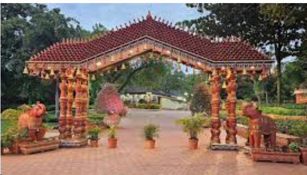
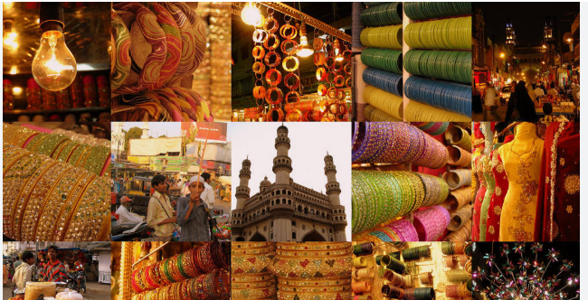

shilaparamam
a renowned arts and crafts village in Hyderabad, Telangana, dedicated to preserving traditional Indian culture, crafts, and heritage. Established in 1992, this 65-acre site in Madhapur (HITEC City) serves as a year-round platform for artisans from across India to showcase and sell their handmade.

Laad Bazaar
, also known as Choodi Bazaar, is one of Hyderabad’s oldest and most iconic shopping streets. Located on one of the four roads branching off from the Charminar, this kilometre-long market has been a hub for traditional Hyderabadi commerce since the Qutb Shahi era in the late 16th century.